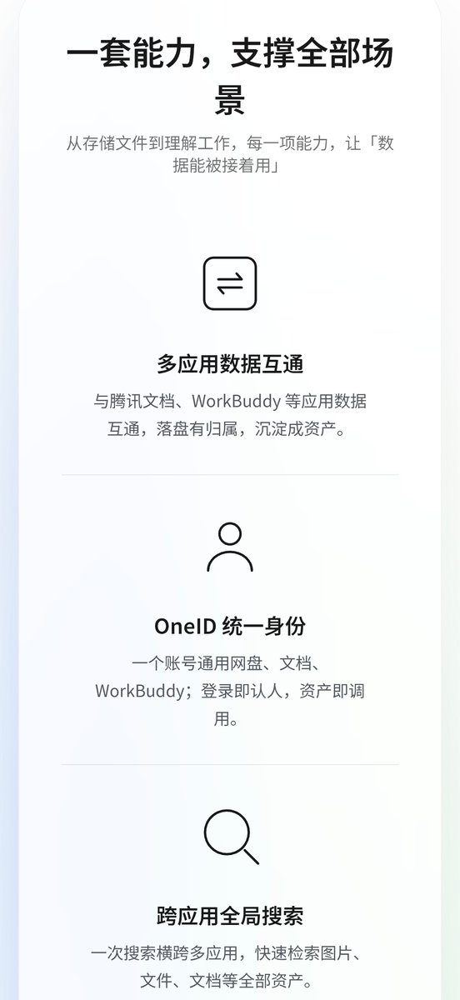
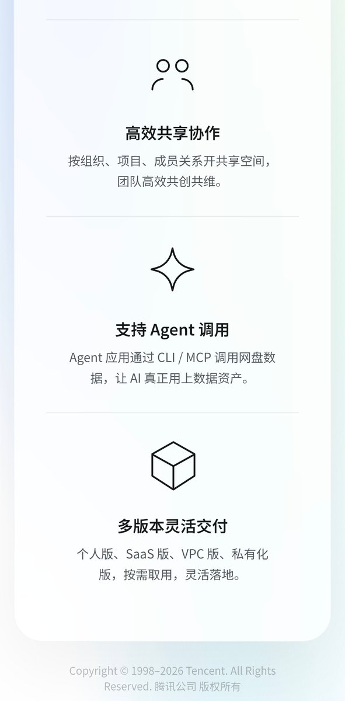

腾讯的产品一直令我难绷，就比如微云以前是个QQ SVIP就能高速下载，现在单独开会员还跑不满，当然还有对标迅雷死去的QQ旋风
现在又冒出了个腾讯网盘，搞不懂AI布局失败后又想搞什么新花样。只记得当时TIM拉人活动给的100GB空间都给回收了，还有推友的QQ邮箱tree也被回收补偿一个月邮箱VIP，这样搞还有谁敢用腾讯的东西？
最后就是QQ域名的频率降低，反而转向集团Tencent域名。从腾讯云qcloud转子域名cloud，对标Trae的CodeBuddy的API地址，以及这个即将上线的腾讯网盘。综上给我的感觉就是昙花一现，看这架势像是在对标微软OneDrive
现在又冒出了个腾讯网盘，搞不懂AI布局失败后又想搞什么新花样。只记得当时TIM拉人活动给的100GB空间都给回收了，还有推友的QQ邮箱tree也被回收补偿一个月邮箱VIP，这样搞还有谁敢用腾讯的东西？
最后就是QQ域名的频率降低，反而转向集团Tencent域名。从腾讯云qcloud转子域名cloud，对标Trae的CodeBuddy的API地址，以及这个即将上线的腾讯网盘。综上给我的感觉就是昙花一现，看这架势像是在对标微软OneDrive

